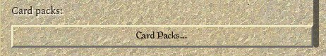
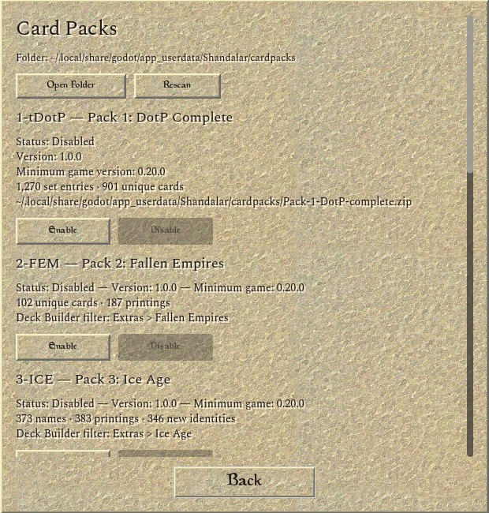

Card pictures can't come with the game, because they aren't ours to hand out. So the game brings a small tool that downloads them from Scryfall onto your own computer. The packs that add the later sets are made the same way, because they carry those sets' pictures. Pick your computer in the bar above and this page shows only your steps.
-
1
Download the game
Open the downloads page. Under Assets, click the file for your computer that ends in -with-skin.zip. That one has the original look and sounds.
- Shandalar-…-linux64.zip
- Shandalar-…-linux64-with-skin.zipThis one
- Shandalar-…-macos.zip
- Shandalar-…-macos-with-skin.zipThis one
- Shandalar-…-windows64.zip
- Shandalar-…-windows64-with-skin.zipThis one
The … is the version number, which goes up with every release. The macos download runs on both Apple Silicon and Intel Macs. -
2
Unzip it and find the game folder
Right-click the zip and choose Extract All…, then Extract. The game won't run from inside the zip.
Double-click the zip. A folder appears next to it.
Right-click the zip and choose Extract Here.
Move the folder somewhere easy to find, such as Documents. The game folder is the one with Shandalar.exeShandalar.apprun.sh and a folder called tools in it. You'll come back to it in step 5.
Windows makes a folder named after the zip and puts the game folder inside it. Go one folder deeper.
- cards
- decks
- packaging
- skin
- tools
- README.txt
- run.sh
- Shandalar.exe
- Shandalar.app
- Shandalar.pck
- Shandalar.x86_64
The game folder (a few more files are in it too). -
3
Start it once
Double-click Shandalar.exe. The first time, Windows may warn you, because the game isn't signed by a company. Click More info, then Run anyway.
Click More info
Windows protected your PCMicrosoft Defender SmartScreen prevented an unrecognized app from starting.
More infoDon't runClick Run anyway
Windows protected your PCApp: Shandalar.exe
Publisher: Unknown publisherRun anywayDon't runDouble-click Shandalar.app. The first time, macOS stops it because the game isn't from the App Store. Close the message, then let it through once in System Settings.
Close the message
“Shandalar” Not OpenedApple could not verify “Shandalar”…DoneMove to TrashOpen System Settings → Privacy & Security, scroll down, click Open Anyway
“Shandalar” was blocked to protect your Mac.Open AnywayOlder macOS versions word these a little differently, but the Open Anyway button is in the same place.
Double-click run.sh (if your file manager asks, choose Run), or start it from a terminal with
./run.sh.You'll see the main menu. You can already play the 897 original cards; they just have no pictures yet. Close the game for now.
-
4
Install Python
Python is free, and the download tool is written in it. You install it once and never have to open it.
Go to python.org/downloads, click the yellow button, open the file it downloads and keep the default choices.
Download the latest version for Windows for macOSDownload Python 3.xOne more click on a Mac. When it has installed, open Applications → Python 3.x and double-click Install Certificates.command. Without this, the downloads stop with a “certificate” error.- IDLE.app
- Install Certificates.command
- Python Launcher.app
- ReadMe.rtf
- Update Shell Profile.command
You very likely have it already. In a terminal, type
python3 --version: it should say 3.10 or newer. If it isn't there, install thepython3package from your software centre.$ python3 --version Python 3.12.3
-
5
Open a command window in the game folder Key step
A command window is a plain text window where you paste instructions for your computer. It has to be opened in the game folder, so the tool finds its files.
Open the game folder and click the address bar at the top
This PC › Documents › Shandalar-…-windows64- cards
- tools
- Shandalar.exe
Type cmd over the path and press Enter
cmdA black window opens, already in the game folder
C:\Users\you\Documents\Shandalar-…-windows64>
Open Terminal: it's in Applications → Utilities, or press ⌘ Space, type Terminal and press Enter. Open it after Python is installed.
Type cd and a space. Don't press Enter yet
~ % cd
Drag the game folder from Finder onto the window
~ % cd /Users/you/Documents/Shandalar-…-macos
Press Enter. The prompt now shows the folder's name
Shandalar-…-macos %Right-click an empty spot inside the game folder
A terminal opens, already in the game folder
~/Documents/Shandalar-…-linux64$How to tell it worked: the line with the blinking cursor ends with the game folder's name.
-
6
Paste the commands and let them run Key step
Click Copy the commands. Click in the command window, paste, and press Enter.
Paste with Ctrl V or a right-click ⌘ V Ctrl Shift Vpy -3 tools/fetch_card_art.py --out cache/cardartpy -3 tools/mtg_assets.py --from-cardart cache/cardart --out skin/cardart.zippy -3 tools/pack_1_dotp_complete.py fetch-artpy -3 tools/pack_1_dotp_complete.py build cardpacks/Pack-1-DotP-complete.zippy -3 tools/pack_2_fallen_empires.py fetch-artpy -3 tools/pack_2_fallen_empires.py build cardpacks/Pack-2-Fallen-Empires.zippy -3 tools/pack_3_ice_age.py fetch-artpy -3 tools/pack_3_ice_age.py build cardpacks/Pack-3-Ice_Age.zippy -3 tools/pack_4_homelands.py fetch-artpy -3 tools/pack_4_homelands.py build cardpacks/Pack-4-Homelands.zippy -3 tools/pack_5_alliances.py fetch-artpy -3 tools/pack_5_alliances.py build cardpacks/Pack-5-Alliances.zippy -3 tools/pack_6_portal.py fetch-artpy -3 tools/pack_6_portal.py build cardpacks/Pack-6-Portal.zippy -3 tools/pack_7_fifth_edition.py fetch-artpy -3 tools/pack_7_fifth_edition.py build cardpacks/Pack-7-Fifth-Edition.zippy -3 tools/pack_8_mirage_block.py fetch-artpy -3 tools/pack_8_mirage_block.py build cardpacks/Pack-8-Mirage-Block.zippy -3 tools/pack_9_tempest_block.py fetch-artpy -3 tools/pack_9_tempest_block.py build cardpacks/Pack-9-Tempest-Block.zip
python3 tools/fetch_card_art.py --out cache/cardartpython3 tools/mtg_assets.py --from-cardart cache/cardart --out skin/cardart.zippython3 tools/pack_1_dotp_complete.py fetch-artpython3 tools/pack_1_dotp_complete.py build cardpacks/Pack-1-DotP-complete.zippython3 tools/pack_2_fallen_empires.py fetch-artpython3 tools/pack_2_fallen_empires.py build cardpacks/Pack-2-Fallen-Empires.zippython3 tools/pack_3_ice_age.py fetch-artpython3 tools/pack_3_ice_age.py build cardpacks/Pack-3-Ice_Age.zippython3 tools/pack_4_homelands.py fetch-artpython3 tools/pack_4_homelands.py build cardpacks/Pack-4-Homelands.zippython3 tools/pack_5_alliances.py fetch-artpython3 tools/pack_5_alliances.py build cardpacks/Pack-5-Alliances.zippython3 tools/pack_6_portal.py fetch-artpython3 tools/pack_6_portal.py build cardpacks/Pack-6-Portal.zippython3 tools/pack_7_fifth_edition.py fetch-artpython3 tools/pack_7_fifth_edition.py build cardpacks/Pack-7-Fifth-Edition.zippython3 tools/pack_8_mirage_block.py fetch-artpython3 tools/pack_8_mirage_block.py build cardpacks/Pack-8-Mirage-Block.zippython3 tools/pack_9_tempest_block.py fetch-artpython3 tools/pack_9_tempest_block.py build cardpacks/Pack-9-Tempest-Block.zip
The button copies all twenty lines joined into one, so they run in order and stop at the first problem. What these lines do
- lines 1–2
- Download the pictures of the 897 original cards and pack them into
skin/cardart.zip. - lines 3–4
- Pack 1: completes the original sets' checklists.
- lines 5–6
- Pack 2: Fallen Empires.
- lines 7–8
- Pack 3: Ice Age.
- lines 9–10
- Pack 4: Homelands.
- lines 11–12
- Pack 5: Alliances.
- lines 13–14
- Pack 6: Portal and Portal Second Age.
- lines 15–16
- Pack 7: Fifth Edition.
- lines 17–18
- Pack 8: Mirage, Visions and Weatherlight.
- lines 19–20
- Pack 9: Tempest, Stronghold and Exodus.
Now wait. It takes about an hour and a half: the pictures come from Scryfall at the steady pace Scryfall asks for. You can use your computer meanwhile; just leave the window open. Lines like these scroll by:
50/897 processed... 100/897 processed... … card art: 1794 fetched, 0 already present, 0 failed -> cache/cardart … Fallen Empires artwork: 10/102 names Fallen Empires artwork: 20/102 names … Pack 2: 102 unique cards · 187 printings -> cardpacks/Pack-2-Fallen-Empires.zip … Pack 9: 621 unique cards · 636 printings -> cardpacks/Pack-9-Tempest-Block.zip
When the cursor is back on a new empty line, it's done. Saw an error, or did it stop early? Usually the connection dropped for a moment. Paste the same thing again and press Enter: pictures that already downloaded are kept, so it carries on where it stopped.
When it's done, the game folder has the card pictures in
skin/cardart.zipand the nine packs in a newcardpacksfolder. Leave those zip files as they are: don't unzip or rename them. -
7
Switch the packs on
Start the game. In the main menu click Options, then Card Packs…, and click Enable under each pack.
The first start after adding the packs takes a little longer, because the game checks their pictures once.
In Options, scroll to the bottom and click Card Packs…

Click Enable under each pack, and scroll down for the rest

Rescan finds new zipsThe card pictures need nothing more: they show by themselves. If a pack is missing from the list, click Rescan.
-
8
Play
Magic Battle starts a duel against the computer: pick a deck for each seat and click Go!
To play with the new sets, make a deck that uses them:
- Deck Builder
- Extras
- switch on the sets
- Deck → AutoDeck
- Deck → Save deck
- Done
Extras picks which sets the Deck Builder shows. AutoDeck, the gold line at the top of the Deck menu, builds a deck for you from the sets and colours you choose; you can also build one card by card. Then pick your deck in Magic Battle.